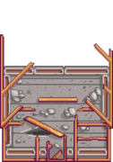
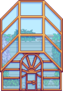
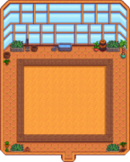
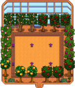

Mora:
“Solo estoy trabajando donde Gus para llegar al fin de mes... pero mi verdadera pasión es la sastrería. Hice estas prendas de vestir desde cero.”
Mora es una aldeana que vive en el Pueblo Pelícano. Ella es uno de los 7 personajes disponibles para casarse. Su hogar está al sur del centro del pueblo, a la derecha de la casa de Jodi, su dirección es Camino del Sauce, 2. Trabaja la mayoría de las tardes en el Salón Fruta Estelar, a partir de las 16:00 aproximadamente.
A Mora le encanta confeccionar su propia ropa, pero la tela puede ser difícil de conseguir en la ciudad. Entre sus regalos favoritos están la Tela y la Lana.
Agenda
Una vez desbloqueado el Balneario de la Isla Jengibre, Mora podrá pasar allí el día de forma aleatoria. Tras abandonar la isla a las 18:00, Mora se irá inmediatamente a casa a dormir. Mora nunca visita el Balneario en días de Festival o en su día de chequeo en la Clínica de Harvey.
A continuación se muestran los horarios de Mora ordenados de mayor a menor prioridad en cada estación. Por ejemplo, si está lloviendo, ese horario prevalece sobre todos los demás.
Tenga en cuenta que el horario de Mora no suele cambiar en las diferentes estaciones, salvo las excepciones mencionadas a continuación.
 Primavera
Primavera
| Otoño 15 (Servicio del autobus restaurado) | |
|---|---|
| 9:00 AM | En su habitación. |
| 10:30 AM | Sale de casa hacia Desierto de Calico para visitar a Sandy en su cumpleaños. |
| 12:00 AM | Vuelve a casa por la noche. |
| Otoño 15 (Servicio del autobus restaurado) | |
|---|---|
| 9:00 AM | En su habitación. |
| 10:30 AM | Sale de casa hacia Desierto de Calico para visitar a Sandy en su cumpleaños. |
| 12:00 AM | Vuelve a casa por la noche. |
| Otoño 15 (Servicio del autobus restaurado) | |
|---|---|
| 9:00 AM | En su habitación. |
| 10:30 AM | Sale de casa hacia Desierto de Calico para visitar a Sandy en su cumpleaños. |
| 12:00 AM | Vuelve a casa por la noche. |
| Otoño 15 (Servicio del autobus restaurado) | |
|---|---|
| 9:00 AM | En su habitación. |
| 10:30 AM | Sale de casa hacia Desierto de Calico para visitar a Sandy en su cumpleaños. |
| 12:00 AM | Vuelve a casa por la noche. |
Abril:

| Información | |
|---|---|
| Cumpleaños: |  Verano 25 Verano 25 |
| Vive en: | Pueblo Pelícano |
| Dirección: | Camino del Sauce, 2 |
| Familia: |  Mora (hermana) Mora (hermana) |
| Matrimonio: | Si |
| Mejores regalos: |
|
 Coco
Coco Suelo Absorbente:
Una alternativa a los aspersores es el Suelo absorbente de lujo. Puede utilizarse en un cultivo en cualquier fase de crecimiento y tiene una probabilidad del 100% de permanecer regado durante la noche. Por tanto, elimina por completo la necesidad de aspersores, lo que libera espacio de cultivo. También es rentable, ya que el fertilizante sólo tiene que elaborarse una vez.
Árboles frutales
Los Árboles frutales pueden crecer en cualquier casilla de la zona exterior del área de cultivo que no esté ocupada por decoraciones, siempre que las demás casillas adyacentes a cada árbol estén vacías de objetos que el jugador haya colocado allí. Ni las paredes del invernadero ni el borde de madera alrededor del rectángulo de cultivo impiden por sí solos el crecimiento de los árboles frutales. Los árboles frutales no pueden plantarse en las esquinas del invernadero. En el invernadero, los árboles frutales siempre estarán con su apariencia de verano.
Es posible cultivar hasta 18 Árboles frutales dentro del invernadero. Una posible disposición óptima se muestra a continuación.

6 Aspersores de iridio y 18 Árboles frutales colocados para maximizar el espacio cultivable y el número de árboles.
Galería
| Estado inicial | Reparado | Interior | 18 Árboles |
|---|---|---|---|
|  |  |  |  |